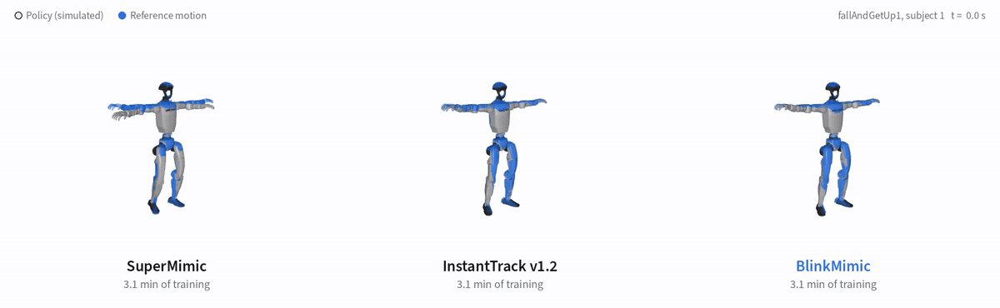
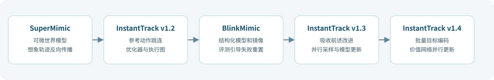
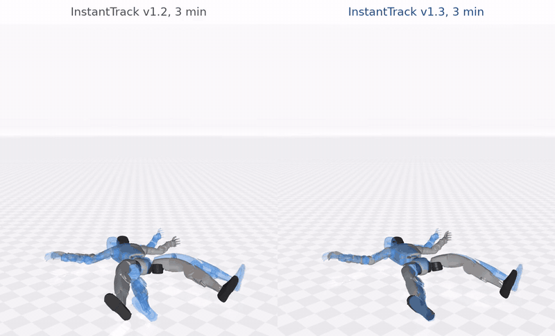
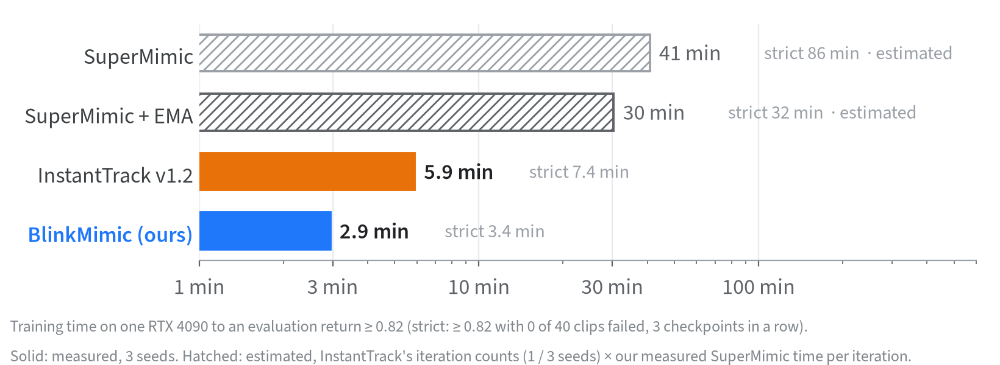

SuperMimic、InstantTrack 与 BlinkMimic：人形动作跟踪为什么能训练得这么快
先看结论：SuperMimic 用一个可微世界模型共享机器人动力学，并通过短时想象轨迹反向传播训练跟踪策略；InstantTrack 在这一训练框架上持续优化；BlinkMimic 基于 InstantTrack v1.2 路线改进动力学建模、失败片段采样和优化配置。InstantTrack v1.3 吸收 BlinkMimic 改动，v1.4 又加入并行执行优化。
这篇是原有 Uni-SuperMimic 教程的加速专题。数值均来自上游作者公开的仿真实验，并非本教程本机重跑结果；这里讨论的是对已准备好的机器人参考动作进行跟踪。

上游演示：同一 RTX 4090［英伟达显卡］训练 3.1 分钟，随机种子 0；从左到右依次为 SuperMimic 社区复现、InstantTrack v1.2 和 BlinkMimic。蓝色为参考动作，淡出表示跌倒。来源：BlinkMimic 作者仓库。
1. 三者是什么关系

图：根据各项目作者公开的代码与版本记录整理。
| 项目 | 主要贡献 | 适合关注的问题 |
|---|---|---|
| SuperMimic | 世界模型共享不同动作的机器人动力学；在模型里展开短轨迹并计算策略梯度 | 方法原理、动作库规模与真机迁移 |
| InstantTrack | 在社区复现上优化初始化、采样、优化器和训练执行，后续吸收 BlinkMimic | 几分钟训练路线和各版本对照 |
| BlinkMimic | 改进世界模型结构、镜像增广、评测引导重置与批量、学习率配置 | 分析更快收敛的训练配方 |
InstantTrack v1.2 中已有参考动作跳连、Muon［动量正交化优化器］和 CUDA Graph［显卡执行图］；把这些都归为 BlinkMimic 的新增贡献会混淆版本。论文与上游代码分别为 SuperMimic 论文第 2 版、SuperMimic 作者代码、InstantTrack v1.4 版本记录和 BlinkMimic 的实现对照。本次检索未发现 BlinkMimic 独立论文，项目以代码及技术说明发布。
2. 一轮训练的数据流
- 输入：40 条已转换为 Unitree G1 关节与根部运动的 LAFAN1 参考动作。仿真中的机器人接收参考目标和自身状态，输出关节控制动作。
- 采样：4096 个并行仿真实例执行策略，产生状态、动作、下一状态和奖励等转移，写入经验池。动作重定向和数据加载发生在训练前。
- 学习动力学：世界模型用经验池中的轨迹拟合状态变化，输入还包含摩擦等仿真上下文。论文的模型训练使用 8 步自回归窗口；奖励、观测与终止可使用学习或解析形式。
- 改进策略：从经验池采样起点，在学习到的模型中展开 32 步想象轨迹，依据跟踪奖励和末端价值估计计算目标。单次策略更新时固定模型权重，梯度穿过世界模型传回策略；下一轮继续更新世界模型。
- 评测：保存策略后从每条动作首帧开始完整回放，统计归一化回报和失败动作。连续三个检查点满足条件时，报告第一个达标检查点的训练时间；后两个检查点用于确认连续性。
数据采样来自物理仿真器，梯度经过学习到的世界模型，而不经过仿真器。原论文报告，在其测量设置下，模型中的轨迹生成比 MuJoCo Warp［物理仿真后端］快超过 10 倍；对同一世界模型中的 PPO［近端策略优化］对照，一阶梯度达到相应回报所需想象步数约少 64 倍。这两个数字分别描述模型展开速度和优化样本效率，不是整条训练流程固定加速倍数。论文第 3、4 节
3. 哪些设计减少了训练时间
3.1 从参考关节角度开始，而不是完全从零输出
InstantTrack v1.2 的参考动作跳连把下一帧参考关节角度转成基础控制量，策略网络再叠加修正：
动作 = (下一帧参考关节角 − 默认关节角) / 动作缩放 + 策略网络输出的修正
其中默认关节角和缩放由机器人配置给出。代码从未归一化的目标向量取参考关节角；策略最后一层初始权重被缩小，因此初始修正较小。策略依然需要学习平衡、接触和动力学补偿。BlinkMimic 网络实现
3.2 BlinkMimic 相对 v1.2 改了什么
| 设计 | 实际作用 | 代码或默认值 |
|---|---|---|
| 半隐式结构化世界模型 | 预测速度变化并利用前后速度积分位置，同时学习小幅位置修正 | --wm_structured；模型实现 |
| 左右镜像增广 | 对一半世界模型训练样本做对称变换，扩大可用训练样本 | --wm_mirror 0.5 |
| 评测引导重置 | 从第 1000 轮起，每 125 轮扫描参考动作；15% 的重置概率分配到失败点前 10 秒 | --eprobe_share 0.15 等参数 |
| 想象批量与学习率 | 策略想象批量从 4096 调为 2048；策略学习率先为基础值的 4 倍，再根据进度回落 | --pi_batch 2048 --pi_lr_mult 4 |
| 开始阶段与执行 | 取消仅训练世界模型的预热；采样、重置和探测使用执行图，探测与检查点写入异步执行 | --wm_only_iters 0 等参数 |
例如机器人在某段动作第 25 秒跌倒，失败定位会增加第 15–25 秒附近的重置概率，让训练更集中于难点。完整预设、失败点采样代码。上游整体对比同时改变了多项设置，无法从该表推断每一项单独贡献了多少加速。
3.3 InstantTrack 后续做了什么
v1.3 将 BlinkMimic 的结构化模型、镜像、失败定位及训练配置纳入预设，并把采样和世界模型更新放到并行显卡执行流；并行更新使用本轮开始时的模型副本，采集数据在下一轮进入经验池。v1.4 又把参考目标批量编码、价值网络更新和评测扫描放入更高效的执行安排，并优先扫描近期失败的片段。v1.3 说明 · v1.4 说明

InstantTrack 作者演示：同一 RTX 5090［英伟达显卡］训练 3 分钟，随机种子 0；比较 v1.2 与 v1.3 的倒地起身跟踪。实体为策略，蓝色虚影为参考。来源：InstantTrack 作者仓库。
4. 3 分钟的数字怎么比较
同机直接对照：BlinkMimic 与 InstantTrack v1.2
下表来自 BlinkMimic 作者对同一 RTX 4090［英伟达显卡］、空闲显卡、40 条训练动作、各三个随机种子的比较。训练计时包含编译、执行图捕获、训练中探测和检查点保存；不含进程启动、数据加载和离线评测。
| 指标 | InstantTrack v1.2 | BlinkMimic |
|---|---|---|
| 首次回报 ≥ 0.82 | 5.89 分钟 | 2.94 分钟 |
| 连续 3 个检查点回报 ≥ 0.82 且 0/40 失败 | 7.36 分钟 | 3.38 分钟 |
| 首次回报达标的迭代数 | 2500、2800、2500 | 1300、1500、1200 |
| 每轮平均耗时 | 141 毫秒 | 133 毫秒 |

来源：BlinkMimic 同机实验。SuperMimic 时间由作者用迭代数与单轮耗时估算；InstantTrack v1.2 与 BlinkMimic 为实测的三个种子平均。
单轮耗时下降约 5.7%，达到严格目标的速度约为原来的 2.18 倍，主要来自更少的收敛迭代。在 7.8 分钟预算下，另一项每条动作单次确定性评测报告回报 0.847 对 0.862，两者均为零失败；四次评测统计的对应数值为 0.846/0.1 对 0.861/0。前者展示跟踪质量，后者来自不同评测汇总口径。完整表格
后续版本：InstantTrack v1.3 与 v1.4
这是 InstantTrack 作者在另一张 RTX 5090［英伟达显卡］上的同项目比较，每 100 轮保存检查点，每个检查点评测四次；15 个随机种子配对比较：
| 指标 | v1.3 | v1.4 |
|---|---|---|
| 首次回报 ≥ 0.82 | 2.22 分钟 | 2.01 分钟 |
| 连续 3 个检查点回报 ≥ 0.82 且 0/40 失败 | 3.09 分钟 | 2.74 分钟 |
| 每秒迭代数，种子 10–14 | 10.28 | 11.87 |
v1.4 的每秒迭代数约提高 15%；15 个配对种子的达标时间平均下降约 0.36 分钟，作者报告统计检验 p=0.10。该组 15 个 v1.4 结果使用开发代码，发布代码另测 3 个种子平均为 2.77 分钟。v1.3 早期也曾报告过另一个 2.74 分钟数字；作者后续说明两者相同纯属巧合，勿混为同一实验。v1.4 结果与修正
如何选择：想学最初的世界模型方法，读 SuperMimic；想研究 BlinkMimic 相对 v1.2 怎样减少迭代，优先看同机对照；想从已整合后续改动的版本开始复现，选择 InstantTrack v1.4。4090 和 5090 上分别报告的 3.38、2.74 分钟不能直接判定同硬件排名。两边的细粒度协议均使用四次评测；要求零失败时，四次评测都必须为零。
5. 复现入口与本机资源
本章仅整理上游实验，本机未运行这三套训练。两个社区项目均使用 Linux［操作系统］、支持 CUDA 12.8［英伟达计算平台］的驱动、uv，并各自准备 40 条 G1 参考动作和机器人模型。完整环境及资源按 InstantTrack 安装说明和 BlinkMimic 安装说明执行；已有环境应先检查版本，再决定是否隔离创建。动作数据为 CC BY-NC-ND 4.0［署名、非商业使用、禁止演绎］，使用前阅读数据许可。
固定版本与主要命令：
# InstantTrack v1.4：在已完成资源准备和环境检查后运行。
cd /path/to/instantTrack
git checkout b9512a96d4e82e6ddea9a6de3b03276888bbcb2c
uv run python tools/test_env.py
scripts/fine_protocol.sh it_fine_s0 0
# BlinkMimic：完整 3500 轮；运行后单独评测各检查点。
cd /path/to/blinkmimic
git checkout d264658d6c9ce61fb52f9f0f8985a369f3ccc409
uv run python tools/test_env.py
bash scripts/train.sh /path/to/runs/blink-s0 --seed 0
uv run python tools/eval_batch.py --run_dir /path/to/runs/blink-s0 --group 18 --reps 4
uv run python tools/time_to_target.py /path/to/runs/blink-s0
BlinkMimic 的 3.38 分钟是达标检查点的训练时间；完整默认训练为 3500 轮，上游在 4090 上报告约 7.8 分钟，之后还需离线评测。InstantTrack 的细粒度脚本执行训练和四次离线评测，记录两项耗时。两个项目都提示共享显卡下异步探测可能出错；实际复现应记录显卡占用及配置，遵循上游文档处理。
本机已保存上游源代码与论文，供后续查阅：/data/Data14TB2/research/supermimic-comparison/。论文是 SuperMimic 第 2 版；数据集、运行环境和训练检查点没有随本次资料整理下载。源代码、机器人资产及动作数据各有独立许可。
6. 下一步怎么衡量效果
完整回报与失败数之外，可记录身体位置与方向误差、关节误差、脚底接触一致率、滑动速度、穿地深度和根部漂移。作者的 v1.2 与 v1.3 在这些指标上各有高低；训练目标和接触定义变化也可能影响指标，因此应保存具体版本、数据、检查点、动作列表及评测脚本。仿真对训练动作的回放结果需要单独与未见动作和真机测试区分。InstantTrack 多指标结果